SYDE 671 · Assignment 2
A2
PART ONE
1.1 · Convolution from scratch
The four-loop version loops over each image and kernel row and column. The two-loop version uses one loop for the image and one for the kernel, finding the row with integer division by the width and the column by taking the remainder.
The image is zero-padded around the borders. For an odd kernel length l, the padding on each side is l // 2.
The box filter is a 9 × 9 array with every value equal to 1/81. The difference filters are and its column version . All three filters are compared with SciPy using the same input and zero padding.
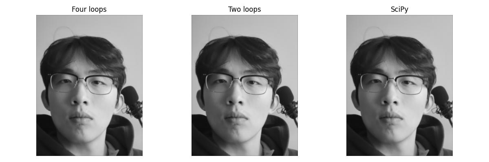
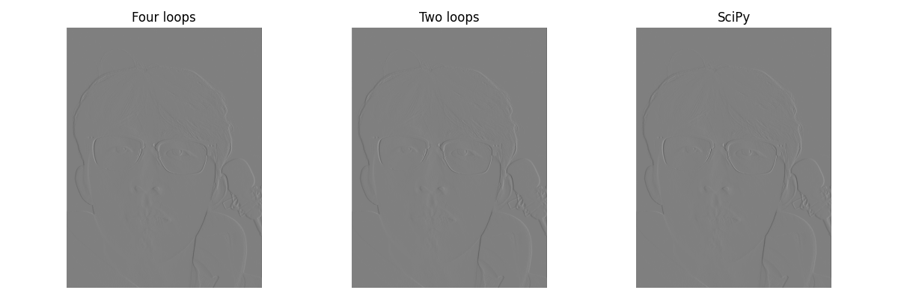
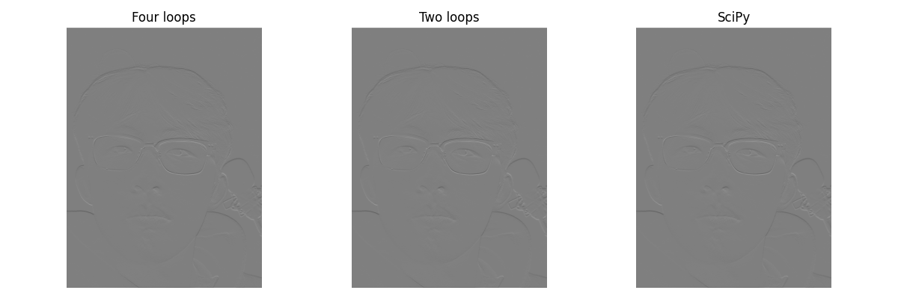
| Filter | Four loops | Two loops | SciPy |
|---|---|---|---|
| 9 × 9 box | 60810.94 | 66532.64 | 291.95 |
| 3478.30 | 3859.79 | 26.52 | |
| 4102.58 | 3951.37 | 43.57 |
All three results look roughly the same. SciPy is much faster because its convolution runs in compiled code. The two-loop and four-loop versions have similar runtimes because they still calculate the same products and sums in Python. The two-loop version also needs division and remainder operations to recover the row and column indices.
Four-loop implementation
def convolve_four_loops(input, kernel):
# Zero padding
# Have to account for non square kernels
k_h = len(kernel)
k_w = len(kernel[0])
padding_len_h = (k_h - 1) // 2
padding_len_w = (k_w - 1) // 2
h = len(input) + 2 * padding_len_h
w = len(input[0]) + 2 * padding_len_w
padded_input = [[0] * w for _ in range(h)]
for row in range(len(input)):
for col in range(len(input[0])):
padded_input[row + padding_len_h][col + padding_len_w] = input[row][col]
# Convolution
out_h = h - k_h + 1
out_w = w - k_w + 1
output = [[0] * out_w for _ in range(out_h)]
for row in range(out_h):
for col in range(out_w):
total = 0
for i in range(k_h):
for j in range(k_w):
# Flip the kernel for convolution
total += padded_input[row + i][col + j] * kernel[k_h - 1 - i][k_w - 1 - j]
output[row][col] = total
return outputTwo-loop implementation
def convolve_two_loops(input, kernel):
# Zero padding
k_h = len(kernel)
k_w = len(kernel[0])
padding_len_h = (k_h - 1) // 2
padding_len_w = (k_w - 1) // 2
h = len(input) + 2 * padding_len_h
w = len(input[0]) + 2 * padding_len_w
padded_input = [[0] * w for _ in range(h)]
for row in range(len(input)):
for col in range(len(input[0])):
padded_input[row + padding_len_h][col + padding_len_w] = input[row][col]
# Convolution
out_h = h - k_h + 1
out_w = w - k_w + 1
output = [[0] * out_w for _ in range(out_h)]
# Flatten to 1D to reduce the number of loops
for i in range(out_h * out_w):
row = i // out_w
col = i % out_w
total = 0
for j in range(k_h * k_w):
kernel_row = j // k_w
kernel_col = j % k_w
total += padded_input[row + kernel_row][col + kernel_col] * kernel[k_h - 1 - kernel_row][k_w - 1 - kernel_col]
output[row][col] = total
return output1.2 · Finite difference operator
Applying the horizontal and vertical difference filters to the cameraman image:
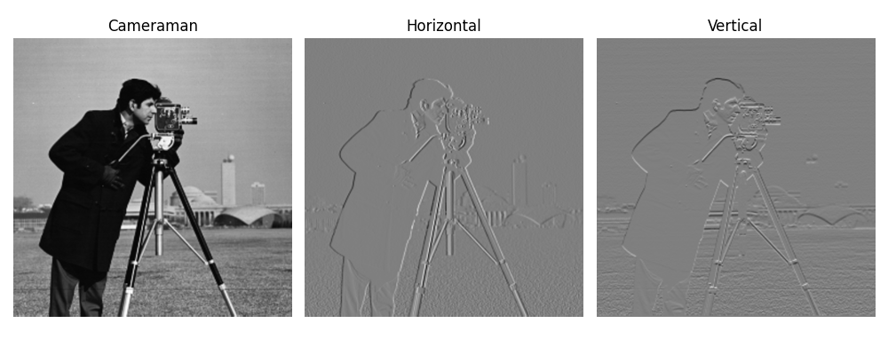
The two derivatives are combined to find the magnitude:
The edge image is calculated using the condition:
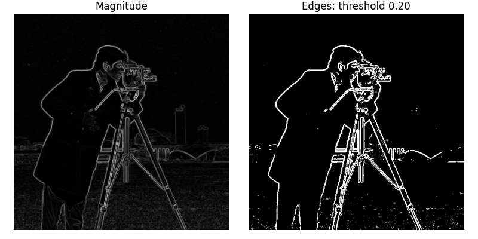
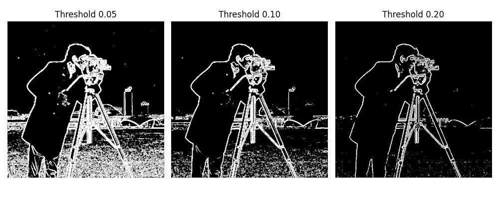
I chose a threshold of 0.2 as it removes most of the grass and background while keeping most of the person, tripod, and camera. Some weaker edges on the camera are lost, but the result is good. A threshold of 0.1 can be used to keep more detail in the surroundings.
1.3 · Derivative of Gaussian
The image is blurred with a 13 × 13 Gaussian, using . The 2D Gaussian is made with cv2.getGaussianKernel by multiplying the column kernel by its row version.
g = cv2.getGaussianKernel(13, 2)
G = g @ g.T
smoothed = gaussian_filter(cameraman, 13, 2, boundary="symm")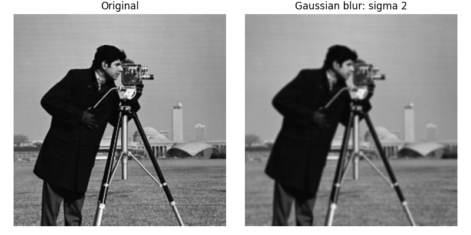
The horizontal and vertical difference filters are applied to the blurred image, then the magnitude is calculated and thresholded at 0.10.
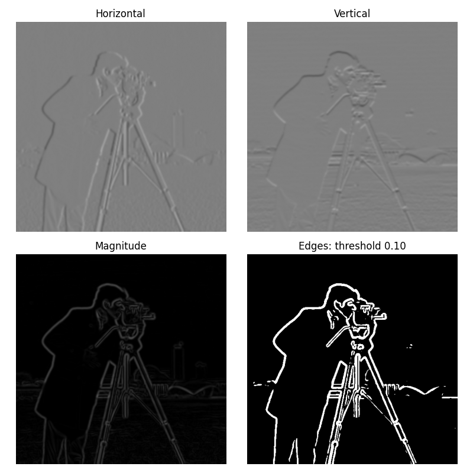
The same result can be obtained by convolving the Gaussian with and first, then applying these DoG filters directly to the original image:
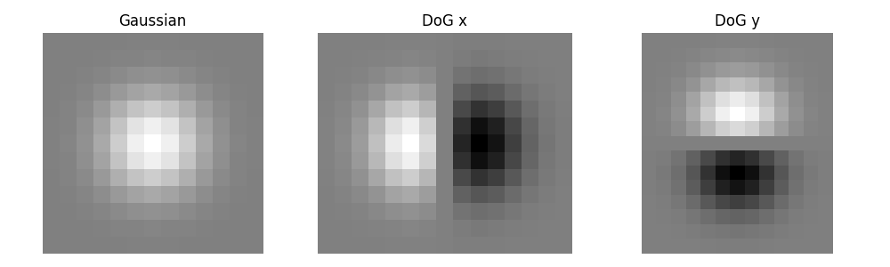
Comparison
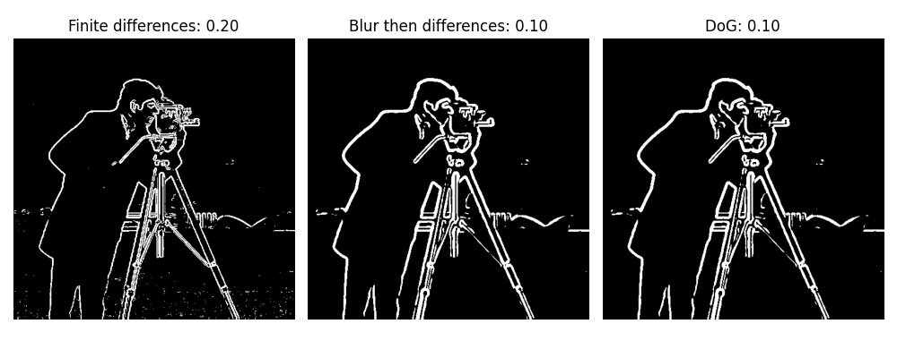
Both Gaussian methods remove more texture because the image is blurred. The edges also become weaker, so a lower threshold of 0.1 is chosen to retain the edges of the cameraman and his camera.
Bells and whistles · Gradient orientation
The gradient direction is calculated with np.arctan2(I_y, I_x). The angles run from to . Adding and dividing by normalizes the angles to 0–1, which is used as the hue in HSV. Different directions therefore get different colors.
Saturation is set to 1. The magnitude is divided by its maximum and square-rooted for brightness, so strong edges are bright and flat areas are dark. Converting HSV to RGB gives the color image below.
angle = np.arctan2(I_y, I_x)
hue = (angle + np.pi) / (2 * np.pi)
brightness = np.sqrt(gradient_magnitude / gradient_magnitude.max())
hsv = np.stack([hue, np.ones_like(hue), brightness], axis=2)
orientation = hsv_to_rgb(hsv)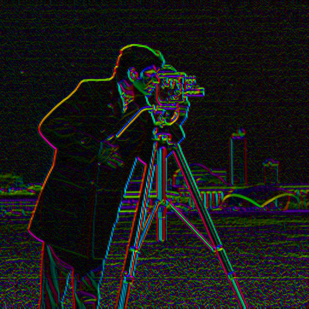
PART TWO
2.1 · Image sharpening
The image is blurred, then the blur is subtracted from the original to get the high frequencies. Adding the high frequencies back to the original image makes the overall image sharper. The sharpening amount is controlled by : 1 adds the detail once, and 2 adds it twice.
Let be the original image and the Gaussian filter. The blur is , the high frequencies are , and the sharpened image is :
To combine this into one convolution, use the identity filter , which is 1 at its centre and 0 elsewhere. Convolving with it leaves the image unchanged: . Substituting for and collecting the filters gives:
The single unsharp mask filter is therefore . The examples use a 13 × 13 Gaussian with .
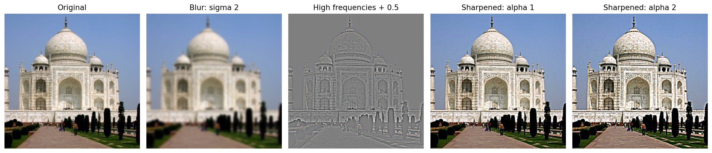
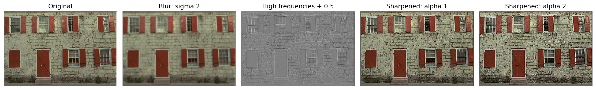
Sharpening makes the edges stand out. In the Taj Mahal image, the construction on the left side of the building becomes more visible than in the original. In the building example, the cracks and wall textures also become clearer. Alpha 2 makes these details stronger, but the outlines look harsher than with alpha 1.
The sharp building photo is blurred, then sharpened again with alpha 1:
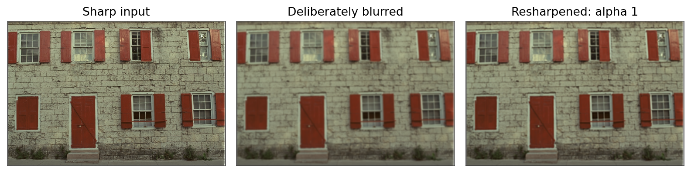
Compared with the original sharp image, the resharpened image looks much worse. The windows and wall texture have lost their sharp appearance. Sharpening brings back some contrast, but it does not recover the fine detail lost during blurring.
2.2 · Hybrid images
Derek is blurred for the low frequencies. Nutmeg is also blurred, then that blur is subtracted from the original Nutmeg image for the high frequencies. Adding the two results gives the hybrid, allowing Nutmeg to show when viewed up close and Derek to show from farther away.
Using the supplied MATLAB alignment code as inspiration, I manually selected the eye positions and aligned Nutmeg to Derek by moving, scaling, and rotating the image. Both images were then cropped to the same area. Biden/Trump uses the same approach. Obama/Jobs also uses the mouth centre for three-point affine alignment.
# Manually selected corresponding eye positions (x, y)
derek_pts = np.float32([[300, 343], [440, 332]])
nutmeg_pts = np.float32([[604, 279], [741, 365]])
# Align Nutmeg to Derek
M, _ = cv2.estimateAffinePartial2D(nutmeg_pts, derek_pts)
nutmeg_aligned = cv2.warpAffine(nutmeg, M, (derek.shape[1], derek.shape[0]))Derek and Nutmeg


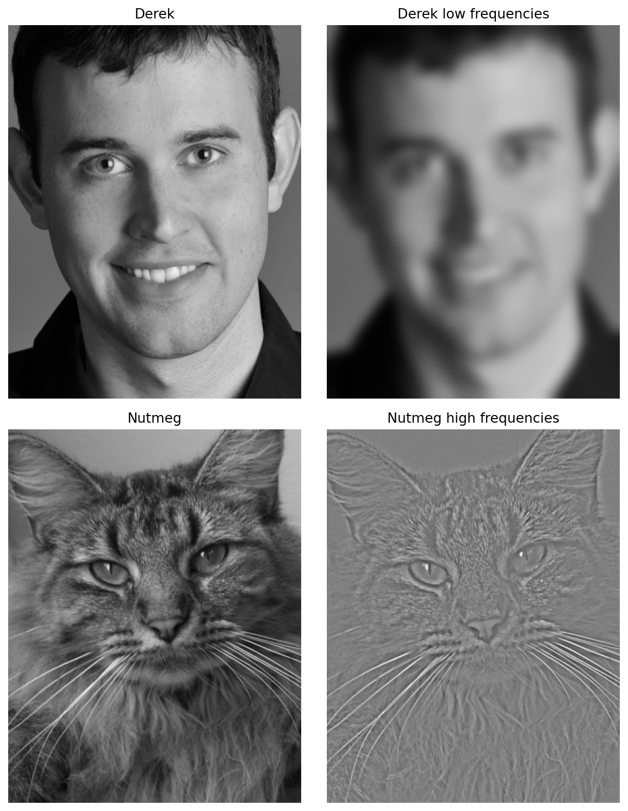
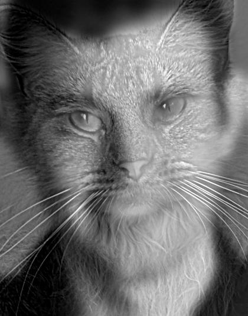
Choosing different Gaussian blur sigmas can result in better or worse-looking hybrids. Here are some variations, using low-pass values of 4, 8, and 16 and high-pass values of 2, 4, and 8.
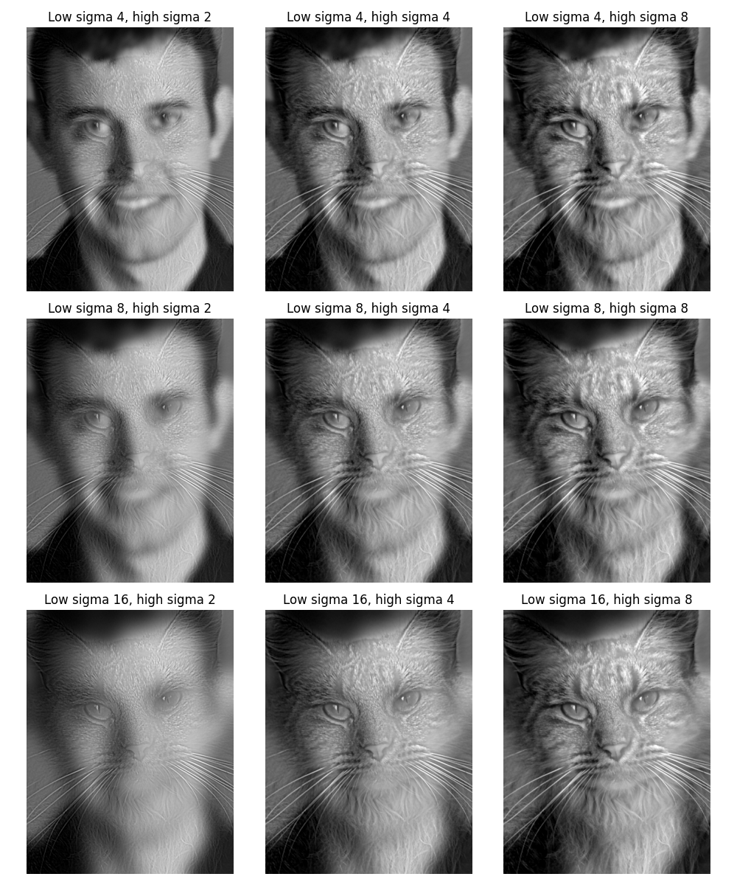
The final image uses the centre result, with and for the low- and high-frequency Gaussian blurs respectively. It keeps both Derek's and Nutmeg's facial features, while the other settings favour one image's features too much.
Frequency analysis
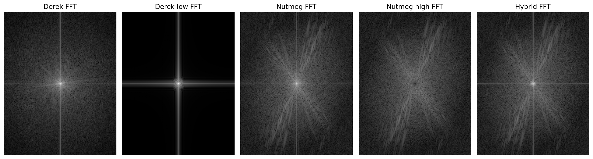
Derek's broad facial features and shading give low frequencies near the centre. Nutmeg's fine fur and whiskers add higher frequencies farther out and contribute to the diagonal streaks.
The cross mostly comes from different shading at opposite image borders. The FFT joins these borders when it repeats the image. Subtracting Nutmeg's blur reduces this difference, so its cross fades. Derek's blurred image keeps the difference, so the cross is still visible.
Obama and Jobs
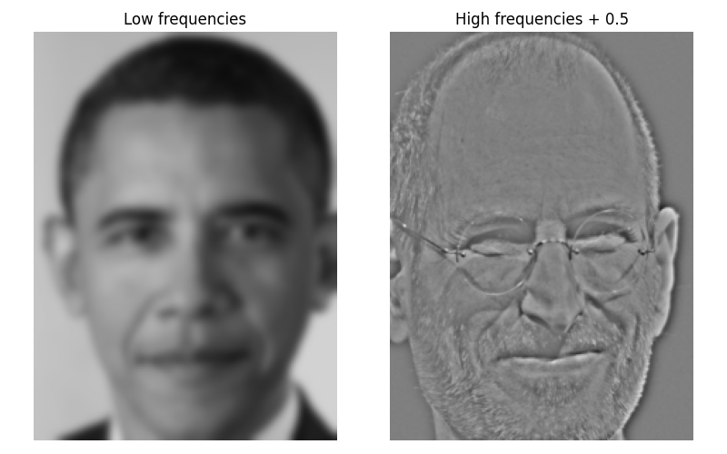
The final image uses and for the low- and high-frequency Gaussian blurs respectively. It keeps Obama's face shape and Jobs's glasses and facial hair. The mouths and main face contours do not fully match, but the hybrid effect is visible.
Biden and Trump
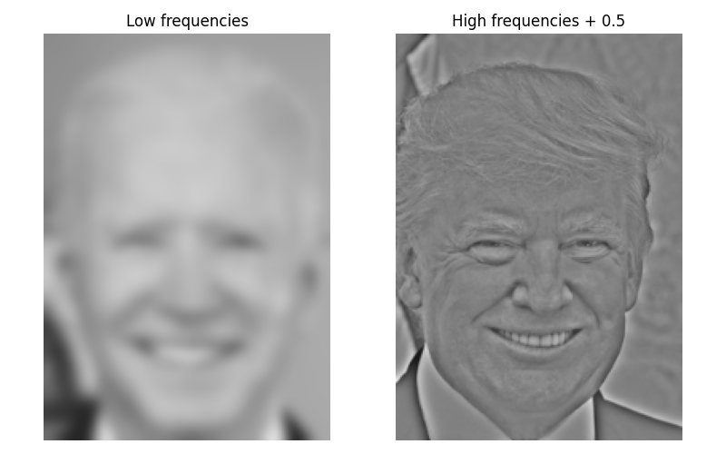
The final image uses for both Gaussian blurs. It keeps Biden's face shape and Trump's facial detail. There are faint double mouth features, but the faces overlap reasonably well.
Bells and whistles · Color
Comparing color in the low frequencies, high frequencies, and both, using the same alignment and sigmas:
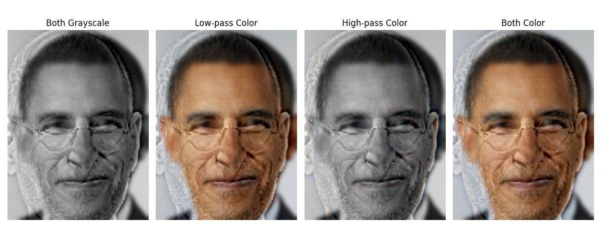
Low-pass color looks better because the blur keeps the general skin and other feature colors. High-pass color looks worse because it mostly keeps color changes around edges. As a result, using color in both looks very similar to using only low-pass color.
2.3 · Gaussian and Laplacian stacks
The Gaussian stack contains the original and copies blurred at . Each blur is applied to the original using a kernel width of , giving sizes of 13 × 13, 25 × 25, 49 × 49, 97 × 97, and 193 × 193.
With Gaussian levels , the Laplacian stack is:
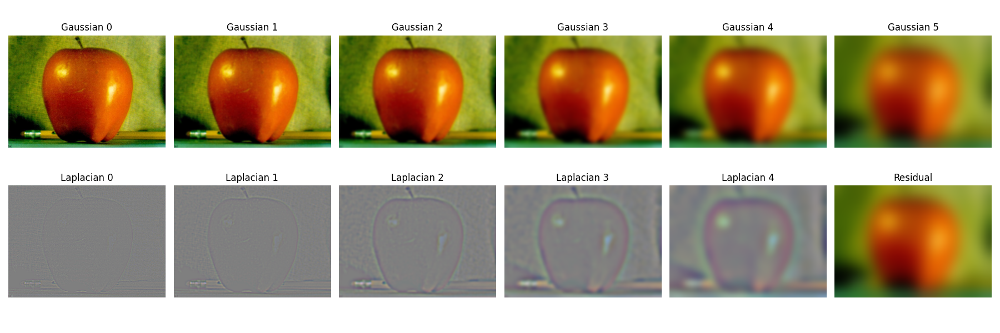
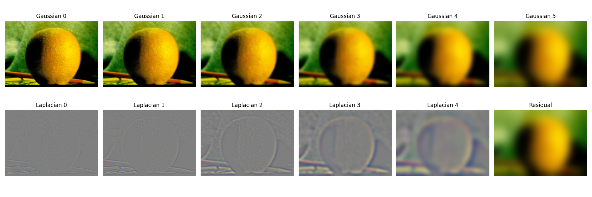
Reconstructing Figure 3.42 (a)–(l)
A mask is set to 1 on the left and 0 on the right, then blurred to make its Gaussian stack. At each level, the apple's Laplacian level is multiplied by the mask and the orange's by one minus the mask. Adding these across all levels gives the blend.
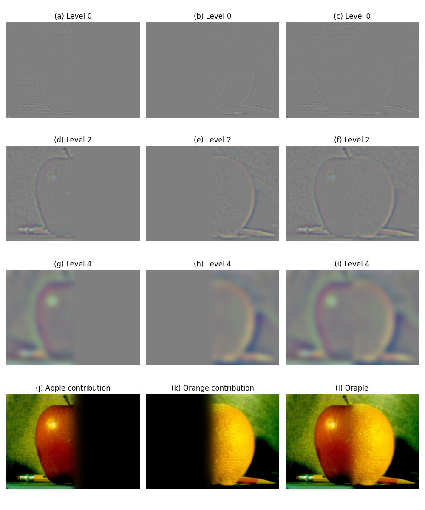
The join between the apple and orange is quite smooth, but the shading on the table and the different pencil colors give it away. There is also the obvious fact that there is no such thing as an oraple.
2.4 · Multiresolution blending
I reused the aligned image pairs from 2.2 and manually chose a circle around the eyes, nose, and mouth. Jobs or Trump is kept inside the circle, with Obama or Biden outside.
The blending follows the same approach as 2.3. The circle mask is first blurred with a 13 × 13 Gaussian at . The stacks then use , with kernel sizes of 13 × 13, 25 × 25, 49 × 49, 97 × 97, and 193 × 193. The images use Laplacian stacks and the mask uses a Gaussian stack.
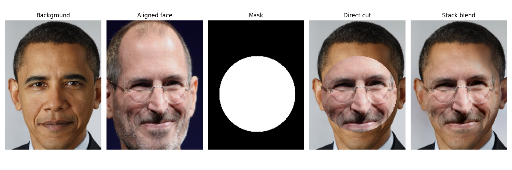
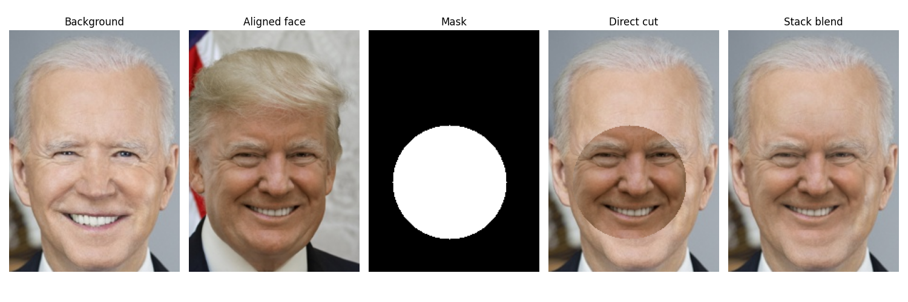
The stack blend softens the circle boundary compared with the direct cut, but there are still cues such as the beard, chin, glasses, lighting, and other features that give it away.
Obama/Jobs · Process
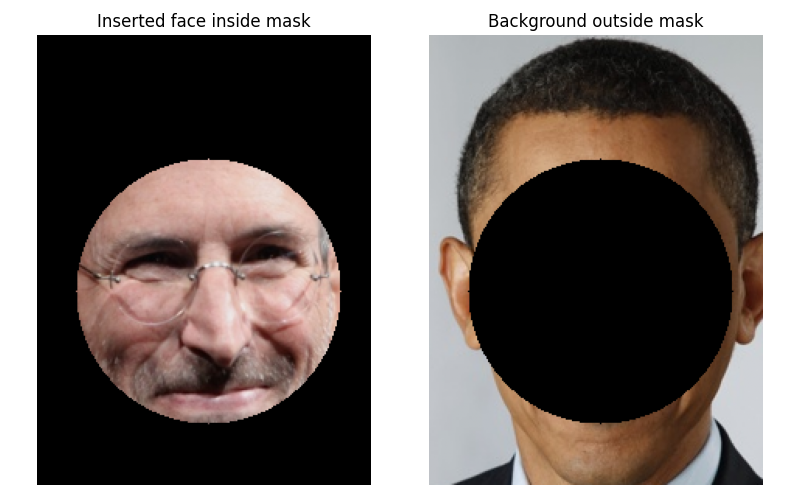
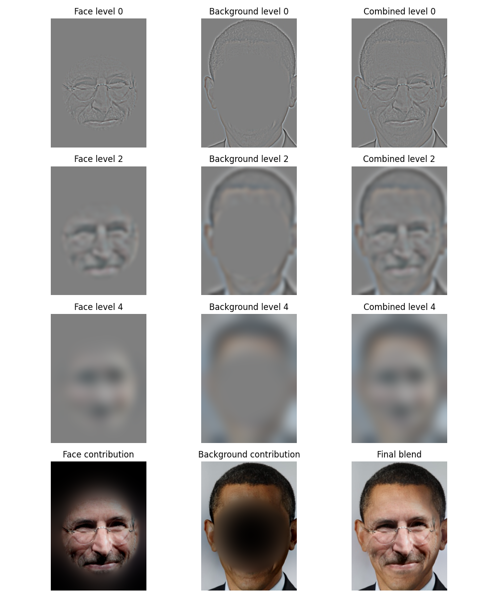
Biden/Trump · Process
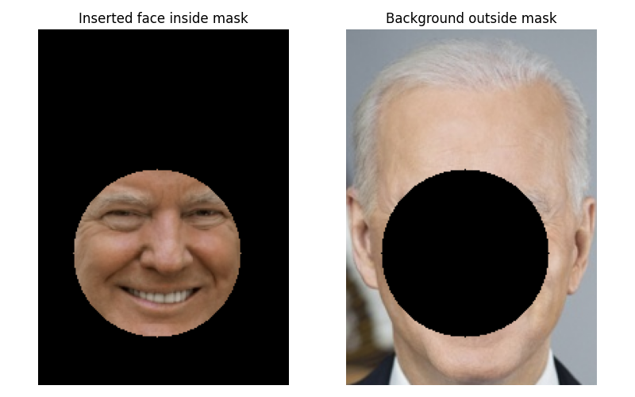
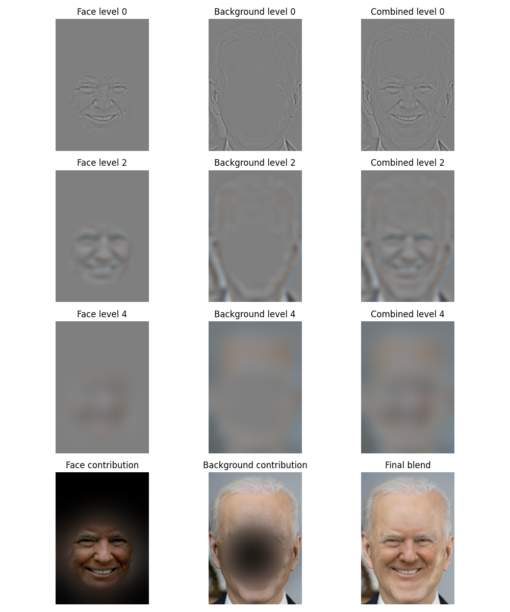
Both process figures show levels 0, 2, and 4. Each row contains the inserted face, background, and their sum. The bottom row adds all levels to form the final blend.
Bells and whistles · Color
Using color keeps the general skin, hair, and clothing colors. The same filtering and mask are used for each RGB channel. Blurring the mask makes the color transition smoother than the direct cut, but differences in lighting still give the blend away.